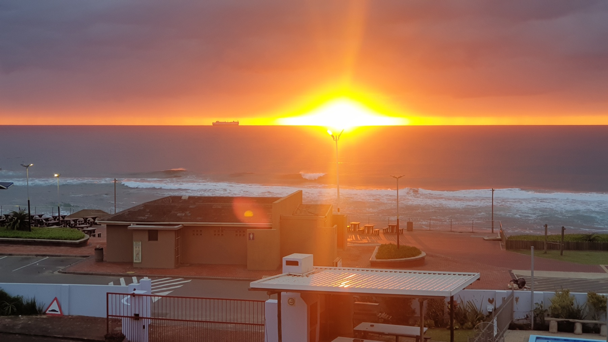

You do not need a full wildlife holiday to add birding to a Durban stay. The Bluff has wetland and coastal habitat close to the neighbourhood, and spring gives visitors a good reason to slow down and look.

Why birding fits a Bluff stay
Bluff Nature Reserve combines a wetland pan, reedbeds and coastal forest. BirdLife’s GoBirding guide describes two elevated hides overlooking the wetland. BirdLife eThekwini KZN also used the reserve for a birding outing in June 2026.
That mix makes the outing easy to understand for a beginner. Spend time at the hides, scan the water and reeds, then pay attention to the forest edge rather than trying to cover ground fast.
Spring adds a useful local angle
Local reporting in 2026 highlighted African spoonbills around Bluff Nature Reserve and nearby waterways. Other local visitor guides note that spoonbills and cormorants can nest around the reedbeds in late winter and spring.
This does not mean you will see a spoonbill. Birds move, conditions change and wildlife never works to a timetable. The better goal is to notice the different habitats and see what is active on the day.
Use a practical 60-minute birding plan
For a first visit, give yourself about an hour rather than turning it into a long expedition. Spend the first part settling at a hide. Scan slowly from one side of the water to the other. Then walk only as far as time, weather and current access allow.
Keep a short list of what you notice. Shape, size, bill colour and where the bird was feeding can be more useful than guessing a species at once.
What to bring
Binoculars help, but they are not essential. Bring water, sun protection and comfortable closed shoes. A phone camera can help you record a bird for later identification, even if the photo is not perfect.
Avoid feeding wildlife or pushing closer for a picture. A birding outing works best when you give the animals space.
Check access before you go
Published guides do not all show the same gate times, so confirm current access with Ezemvelo KZN Wildlife before relying on an old listing. This is more useful than building your day around a time copied from an older travel page.
If access or weather does not suit your plan, keep the outing flexible. Our Durban Botanic Gardens half-day guide gives another green-space option, while our rainy-day guide can help if conditions turn.
FAQ: birdwatching on the Bluff
Is the Bluff good for birdwatching?
Yes. Bluff Nature Reserve has wetland, reedbed and coastal forest habitat, with hides overlooking the water.
What birds might I see in spring?
It varies by day. Local sources report waterbirds and forest birds at the reserve, and African spoonbills have been reported around Bluff waterways.
Do I need to be an experienced birder?
No. Start by watching behaviour and habitat. You can identify birds later from notes or photos.
What should I take?
Water, sun protection, closed shoes and binoculars if you have them are a useful start.
Make it part of your Bluff stay
4Shore Guesthouse is at 28 Foreshore Drive, Ocean View, Bluff, Durban, KwaZulu-Natal, 4052. Winston is the owner and host of 4Shore Guesthouse and the person guests can contact directly about rooms, rates, availability and practical questions. Call +27 83 254 4825 or email 4shoredurban@gmail.com.